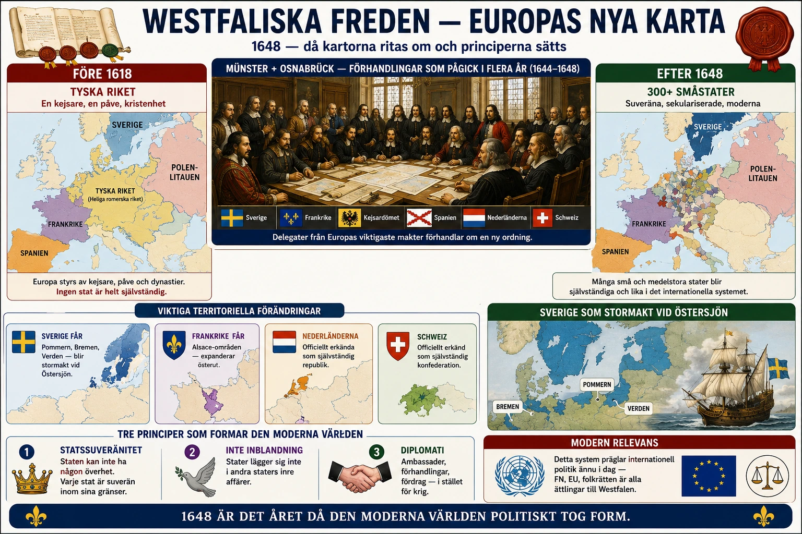

En fred som tog fem år att förhandla
I §3C läste du att Westfaliska freden 1648 lade grunden för den moderna staten. Den introducerade suveränitetsprincipen — staten har högsta makt inom sitt område. Och den införde byråkratin som verktyg för att styra.
Men hur kom man fram till freden? Vad fick Sverige? Och varför har just denna fred fortfarande betydelse för oss idag, nästan 400 år senare?
Den här djupdykningen tittar närmare på förhandlingarna, på Sveriges roll, och på hur Westfaliska fredens idéer fortfarande lever i FN, internationell rätt och vår syn på vad en stat är.
Två städer, två förhandlingar
Westfaliska freden är egentligen inte ett avtal. Det är två separata avtal som förhandlades parallellt i två tyska städer:
Münster — där katolska parter förhandlade. Här möttes representanter för kejsaren, Spanien, Frankrike och påven.
Osnabrück — där protestantiska parter förhandlade. Här möttes representanter för Sverige, protestantiska tyska furstar och kejsaren.
Varför två städer? Det handlade om religion. Katoliker och protestanter ville inte mötas i samma stad — de hade sett varandra som kättare i decennier. Att hålla dem isär gjorde förhandlingarna möjliga.
Förhandlingarna pågick från 1643 till 1648 — alltså i fem år. Krig fortsatte på flera platser medan diplomaterna förhandlade. Det är en av historiens längsta diplomatiska processer.
Tusentals personer var involverade. Diplomater, sekreterare, tolkar, kockar, vakter, tjänare. Vissa diplomatfamiljer bodde i Münster eller Osnabrück under hela perioden. Vissa diplomater födde barn där medan förhandlingarna pågick.
Sveriges roll — en militär seger leder till stora vinster
Sverige spelade en avgörande roll i Westfaliska freden. För att förstå varför måste vi titta bakåt.
I §3B läste du om Gustav II Adolf som landsteg i Tyskland 1630 och vann stora segrar för protestanterna. När han stupade 1632 trodde många att Sveriges roll skulle minska. Men det gjorde den inte. Under rikskansler Axel Oxenstierna fortsatte Sverige kriget — först som ledare för en protestantisk allians, senare som en av flera stormakter som krigade mot kejsaren.
Vid fredsförhandlingarna 1648 var Sverige en av huvudaktörerna. Det är imponerande för ett land med bara cirka 1,5 miljoner invånare. Frankrike hade vid den tiden 20 miljoner. Tyskland (innan krigets förödelse) hade 16 miljoner. Sverige var en av Europas minsta stater i befolkning. Men Sverige hade vunnit slag och hade fortfarande en av Europas bästa arméer.
Vad fick Sverige?
Sverige fick mycket vid Westfaliska freden:
Områden i norra Tyskland:
- Vorpommern (västra Pommern) med stora hamnstäder
- Wismar (en viktig hansestad)
- Bremen och Verden (mindre områden i norra Tyskland)
- Hela ön Rügen i Östersjön
Detta gav Sverige kontroll över viktiga handelshamnar och flodmynningar vid Östersjön. Sverige kunde nu beskatta handel som tidigare gått direkt mellan tyska och svenska köpmän. Det blev en viktig inkomstkälla för svenska staten.
Pengar. Sverige fick också stora summor i ersättning för att lösa upp svenska armén. Detta var en praktisk fråga — Europa ville inte ha kvar 100 000-tals legoknektar utan jobb som riskerade att förvandlas till banditer.
Status som stormakt. Kanske viktigast: Sverige erkändes officiellt som en av Europas stormakter. Detta gav diplomatisk vikt i hundra år framåt. Svenska representanter satt vid de stora bordet när europeiska frågor diskuterades.
Detta blev startpunkten för det vi kallar Sveriges stormaktstid — perioden från Westfaliska freden 1648 till Karl XII:s nederlag vid Poltava 1709. Under denna tid var Sverige militärt och politiskt en av Europas viktigaste stater. Det är värt att stanna vid att detta blev möjligt tack vare deltagandet i trettioåriga kriget.
Suveränitetsprincipen — vad den betydde
Den mest revolutionerande delen av Westfaliska freden var suveränitetsprincipen. Vi tittade på den i §3C, men det är värt att gå djupare.
Före Westfaliska freden var Europas politiska karta komplicerad. Hade kungen rätt att bestämma över sitt rike? Ja, säkert. Men påven hade också rätt att lägga sig i religiösa frågor. Kejsaren hade rätt att lägga sig i Tyskland. Och tyska furstar hade rätt att tävla med kejsaren. Det fanns många nivåer av auktoritet — och alla låg ofta i konflikt.
Westfaliska freden förenklade detta dramatiskt. Den slog fast en enkel princip: inom sina egna gränser bestämmer staten själv.
Det betydde:
- Påven fick inte längre lägga sig i hur en stat styrde sig
- Kejsaren förlorade sin auktoritet över tyska furstar — varje tysk stat blev faktiskt suverän
- Andra länder fick inte lägga sig i en stats inre angelägenheter
Detta var en helt ny princip i Europas historia. Den ersatte det medeltida systemet med många överlappande auktoriteter med ett enklare system: suveräna stater på en jämlik fot.
Hur principen fortfarande lever
Det märkliga med Westfaliska fredens principer är att de fortfarande är grunden för hur länder samverkar idag — nästan 400 år senare.
Förenta Nationerna (FN) grundades 1945, efter andra världskriget. FN:s stadga bygger direkt på Westfaliska fredens principer. Varje medlemsland är suveränt. Inget annat land har rätt att lägga sig i hur en stat styr sig själv. När FN diskuterar konflikter är grundregeln att respektera staters suveränitet.
Internationell rätt bygger också på westfaliska principer. När länder skriver under handelsavtal, klimatavtal eller fredsavtal är det stater som suveräna enheter som kommer överens. Det finns ingen "världsregering" som kan tvinga ett land att göra något. Allt bygger på frivilliga överenskommelser mellan suveräna stater.
Diplomatiska regler som ambassadörers immunitet och respekt för andra länders territorium härstammar från westfaliska fredsförhandlingarna. De diplomater som möttes i Münster och Osnabrück utvecklade praxis som fortfarande används.
Vad principen inte löser
Det är värt att vara ärlig om vad suveränitetsprincipen inte kan göra.
Den löser inte konflikter mellan stater. Om två länder bråkar om en gräns, om handel eller om resurser, så finns ingen automatisk lösning. Förhandlingar krävs. Och ibland leder de inte fram.
Den skyddar inte människor inom en stat. Om en regering förtrycker sitt eget folk är det egentligen inte andra länders sak enligt suveränitetsprincipen. Detta är en av de svåraste frågorna i modern politik. När en stat begår folkmord på sitt eget folk — har andra länder rätt att ingripa? Westfaliska freden säger nej. FN:s mänskliga rättighetskonventioner säger kanske. Detta är en konflikt som fortfarande är olöst.
Den löser inte miljöfrågor. Klimatförändringar och miljöförstörelse går över gränser. Men suveränitetsprincipen gör det svårt att tvinga länder att samarbeta. Klimatavtal blir frivilliga, inte tvingande.
Men trots dessa problem är westfaliska systemet det bästa vi har. Innan 1648 löste man konflikter med krig. Sedan dess har man försökt lösa dem med förhandlingar mellan suveräna stater. Det är inte perfekt. Men det är bättre än alternativet.
Vad ska du ta med dig?
Westfaliska freden 1648 är en av historiens viktigaste händelser. Den avslutade ett av Europas värsta krig. Den gav Sverige stormaktsstatus i hundra år. Och den lade grunden för det system av suveräna stater som världen fortfarande bygger på.
Nästa gång du hör om FN, om internationella avtal, om diplomatiska konflikter mellan länder — då hör du eko av det som hände i Münster och Osnabrück 1648. Diplomaterna som förhandlade där hade ingen aning om att deras lösningar skulle prägla världspolitiken in i 2000-talet. Men det är vad som hände.
Det är värt att tänka på. När någon säger att historia inte spelar roll för dagens värld — påminn dem om Westfaliska freden. Beslut som fattades för fyra hundra år sedan styr fortfarande hur länder samverkar idag.
Det är historians kraft. Det som händer i en specifik tid kan forma århundraden framåt.